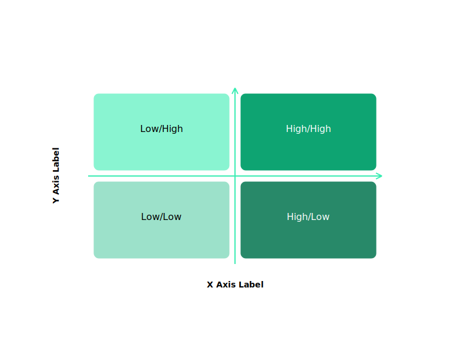
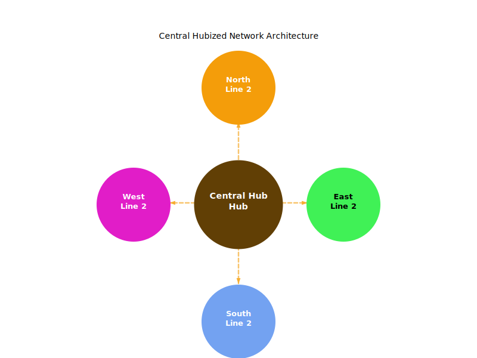
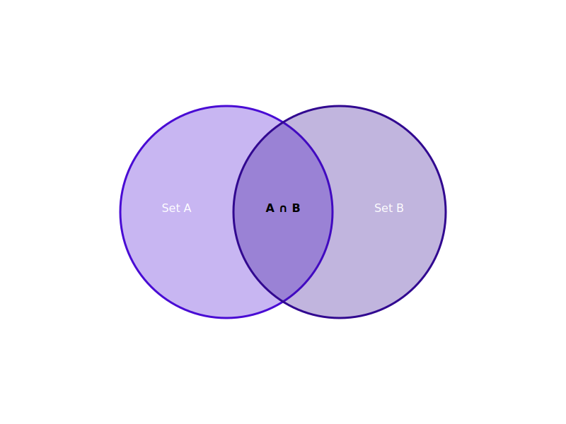

Matrix 2x2 - 2D Gradient
Primary: #10b981 (Green)

✅ 2D Gradient Applied
Q1 (top-right, vivid dark): #0ea472
Q2 (top-left, vivid light): #89f4d1
Q3 (bottom-left, muted light): #9ce1ca
Q4 (bottom-right, muted dark): #288969
Analysis: Colors transition smoothly along both axes
Hub & Spoke 4 - Radial Colors
Primary: #f59e0b (Orange)

⚠️ Radial Colors Applied (Too Diverse)
Hub (dark center): #613f05
Spoke 1: #f49d0a (orange)
Spoke 2: #40f156 (green!)
Spoke 3: #73a2f1 (blue!)
Spoke 4: #e11dc8 (magenta!)
Issue: Spokes too diverse, should be variations of primary
Pyramid 5 - Vertical Gradient
Primary: #3b82f6 (Blue)

✅ Vertical Gradient Applied
Level 1 (base, dark): #053179
Level 2: #0d4eb8
Level 3: #236ee8
Level 4: #6799ea
Level 5 (peak, light): #a7c3f0
Analysis: Smooth gradient from dark to light
Venn 2 Circle - Intersection Blend
Primary: #8b5cf6 (Purple)

❌ Circle colors not detected
Circle 1: Not found
Circle 2: Not found
Intersection: #000000 (black)
Issue: Need to check Venn template structure